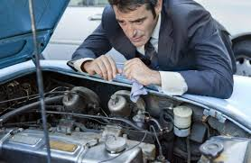
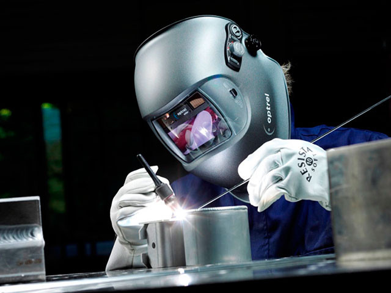
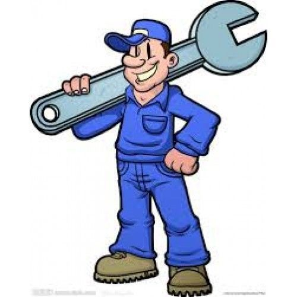
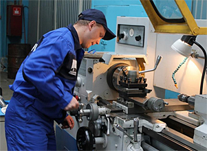
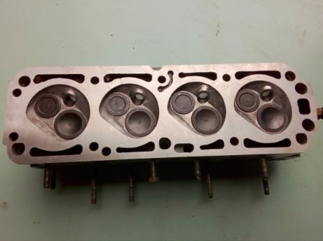

Інформація  І з вашим авто може трапитись неприємність — серйозні чи не надто несправності, які усунути самостійно вкрай важко, та й не варто пробувати — собі дорожче. Варто розуміти, що в таких випадках, щоб зберегти час, кошти та сили, краще дозволити «оглянути» та «лікувати» ваш автомобіль справжнім професіонал, які мають всі необхідні інструменти та багаторічну практику. Переваги  Досвід роботи Професійна та кваліфікована команда Швидкість і якість виконання робіт Лояльні ціни Послуги Наше підприємство надає наступні послуги згідно прейскуранту: Аргонна сварка Реставрація авто Реставрація автомобільних головок Зварка коробок передач Зварка піддонів Зварка нержавійки Шліфовка головок Ремонт автомобільних головок Роботи  Зварювальні Токарні Фрезерні Токарно-ферзерні Шліфувальні Зразки робіт  Контакти